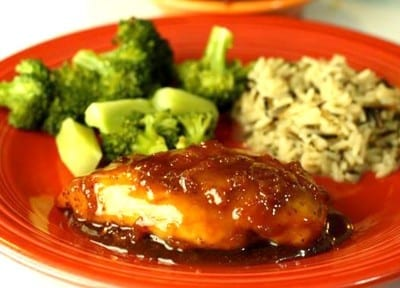

Pechugas de pollo glaseadas

Pechugas glaseadas al chile ancho
Platillo ideal para una celebración, o simplmente para disfrutar en familia
Los ingredientes a utilizar son fáciles de conseguir y su sabor exquisito
hacen que no hay quien se pueda resistir.
Ingredientes
Glaseado
- 2 tazas de jugo de naranja natural.
- 2 cucharadas de vinagre blanco.
- 50 g de piloncillo.
- 2 cucharadas de salsa de soya.
- 2 dientes de ajo finamente picados.
- 2 chiles anchos desvenados y remojados en agua caliente.
Pechugas
- Sal y pimienta al gusto.
- 4 pechugas de pollo deshuesadas
Procedimiento
- Mezcla el jugo de naranja, el vinagre, una taza de agua, el piloncillo
y la salsa de soya.
- Fríe el ajo y los chiles rebanados; agrégalo a la mezcla anterior;
deja a fuego medio, y reduce a la mitad.
- Salpimienta las pechugas y séllalas por ambos lados; colócalas en un
refractario, báñalas con el glaseado, cúbrelo con papel aluminio y hornea
durante 10 minutos a 190 ºC, destapa y deja 10 minutos más en el horno
hasta que queden doradas.